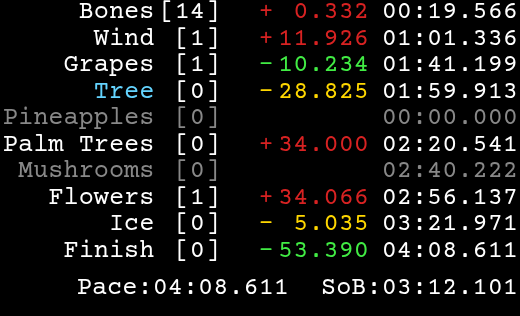
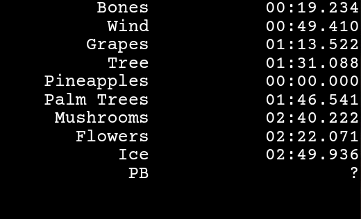
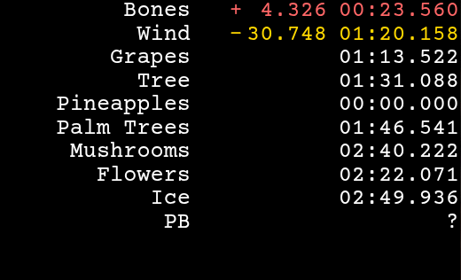
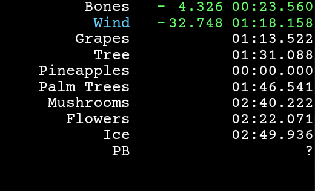
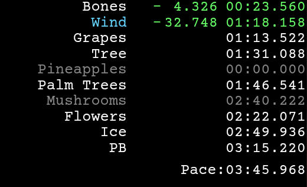
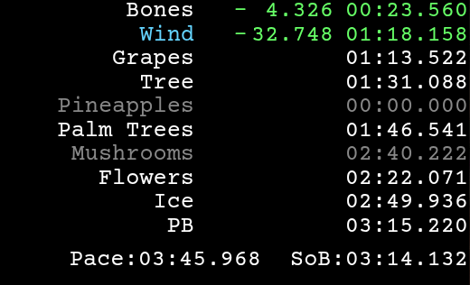
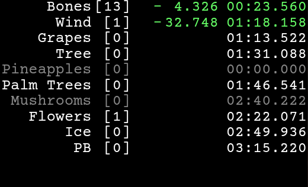
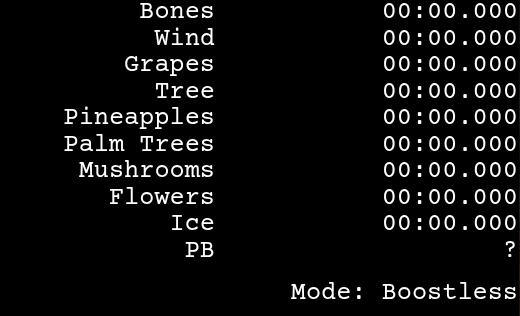
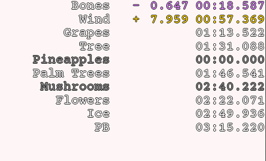
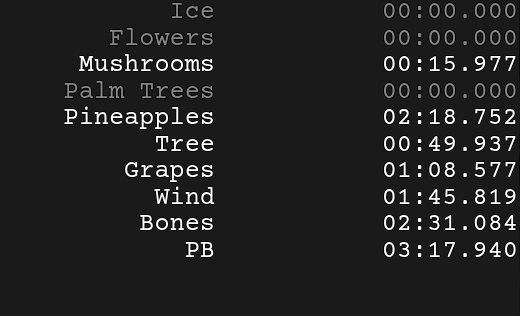

-
Default Pogostuck Split-Tracker FunctionalityHover me :)
- Gold Splits
- Gold Paces
- Pace Estimations
- Sum of Best
- Reset Counters
- Custom Modes
- More Customization (coloring, hide skipped splits, size)
- Reversed UD Splits









